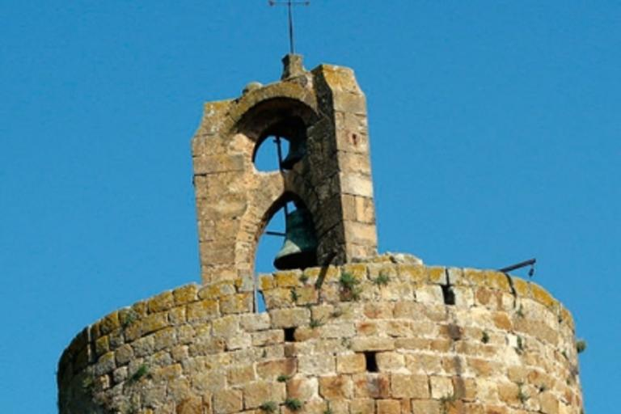

Visita · Montgrí
La torre mestra del castell, datada del s. XII, de planta circular de 7 m de diàmetre, s'aixeca sobre un pòdium de roca natural. Té uns 15 m d'alçada i un gruix de parets de gairebé 2 m. És una de…